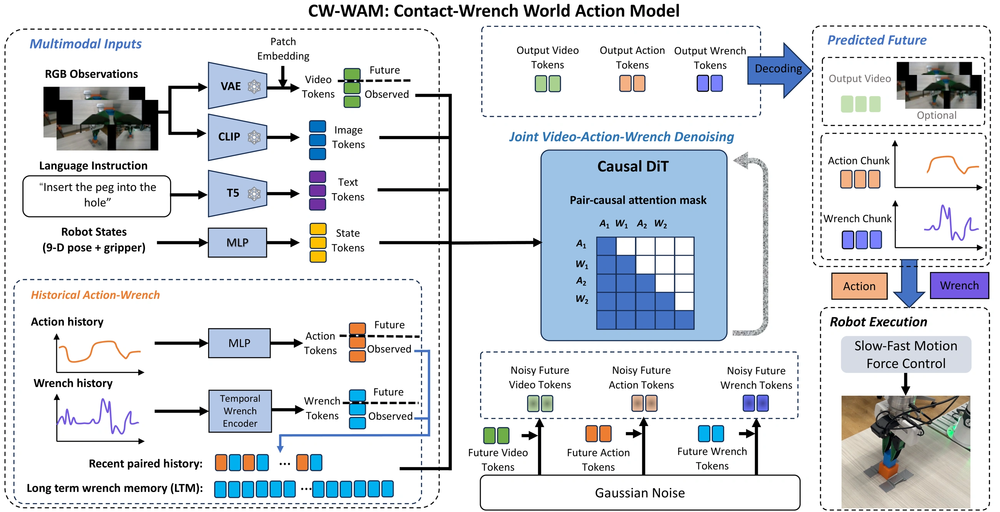
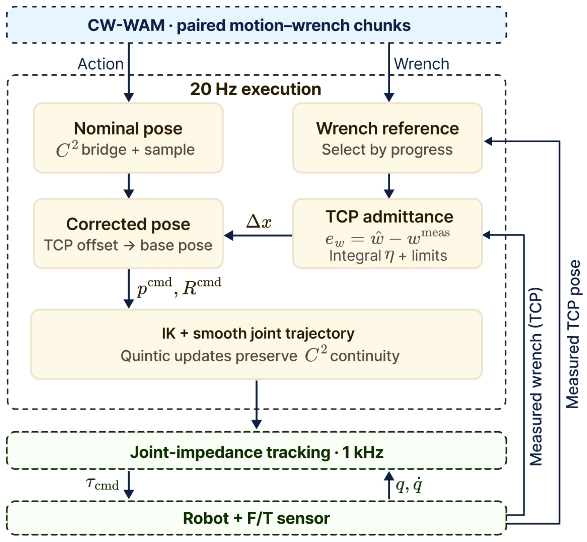
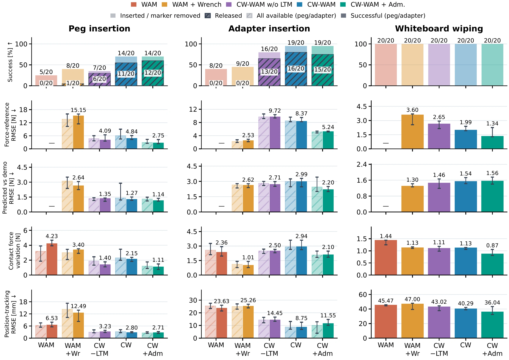
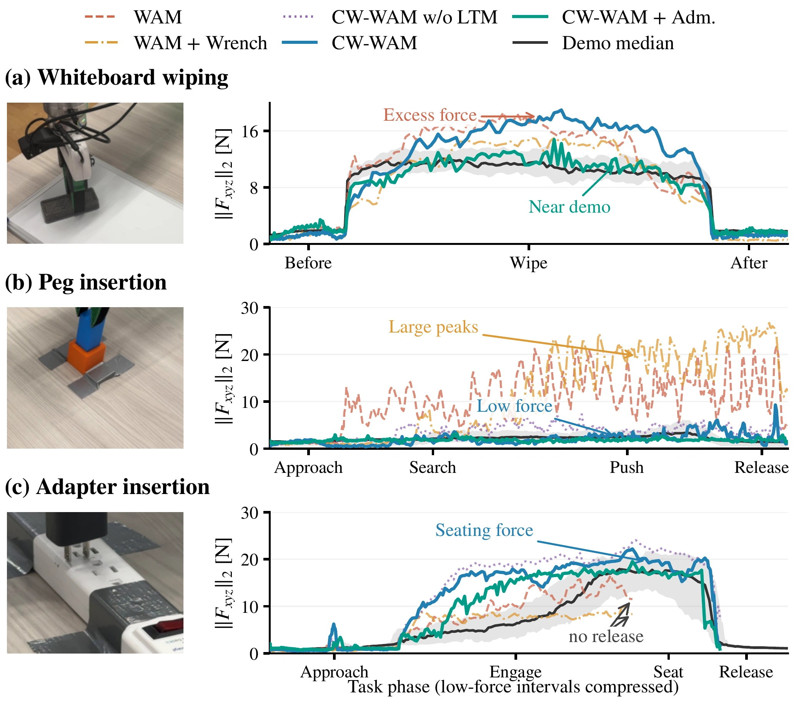
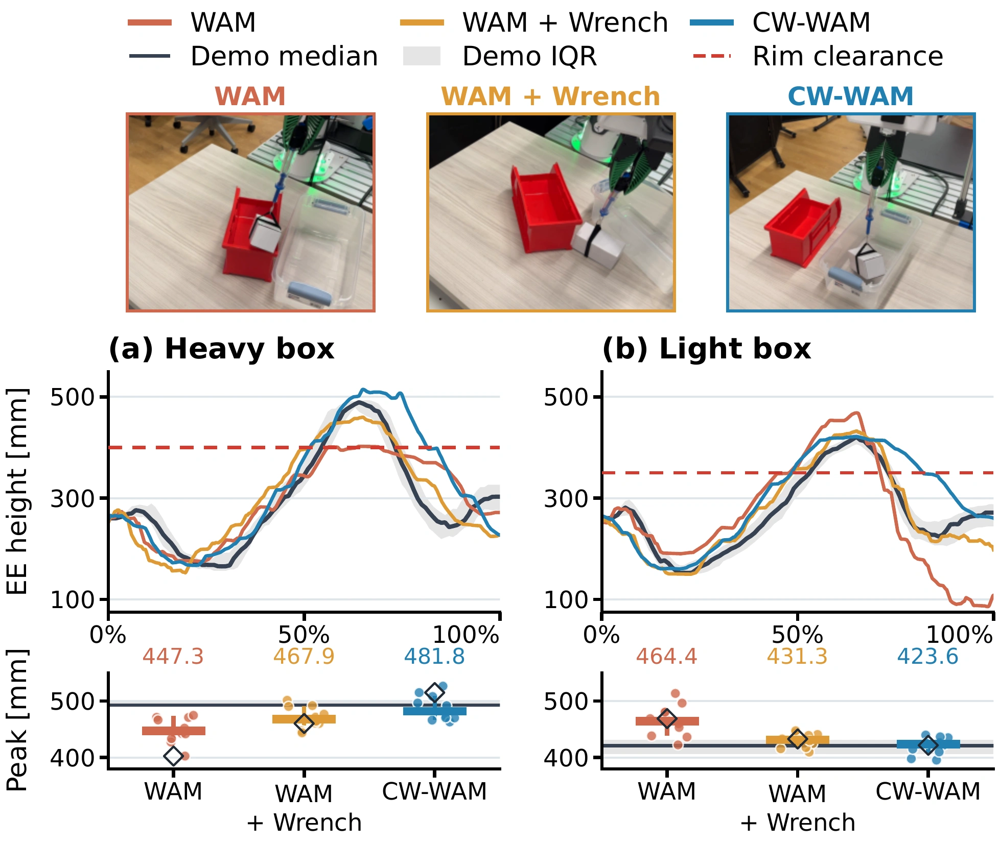
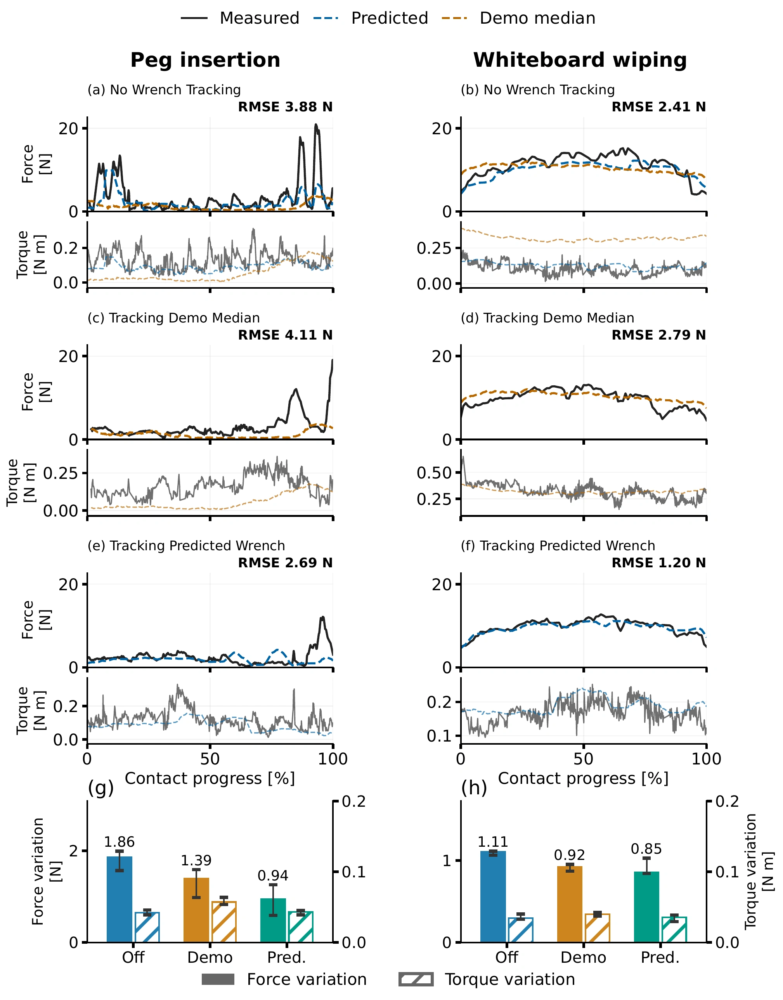

Square peg insertion
The robot inserts a 38-mm square peg into a 40-mm hole with 1-mm clearance per side and an insertion depth of about 50 mm.
Force-sensitive manipulation requires contact and load information that is not provided explicitly by visual observations. We present CW-WAM, a world action model that jointly predicts video, motion, and contact wrench. Inspired by hybrid motion–force control, it contains a unified interaction module that treats both motion and contact wrench as modeling targets and predicts time-aligned motion–wrench chunks as control references. A pair-causal attention mechanism structures the motion–wrench dependencies, while a long fixed-length wrench memory retains past interaction information. The predicted wrench chunk acts as a force reference for a 20-Hz outer-loop admittance controller within a slow–fast control system that maintains force feedback and smooth motion between model queries. CW-WAM improves contact prediction and increases the insertion success rate from 25% to 70% for square pegs with 1-mm clearance per side and from 40% to 95% for power adapters, compared with WAM without wrench input. It also improves lifting-height accuracy across different loads. Our framework with an admittance controller reduces force-reference RMSE from 4.8 to 2.7 N for peg insertion and from 2.0 to 1.3 N for wiping, respectively, with smaller force fluctuations during successful execution.
We select four tasks to test contact-guided alignment, precise seating, force regulation, and adaptation to payload.
The robot inserts a 38-mm square peg into a 40-mm hole with 1-mm clearance per side and an insertion depth of about 50 mm.
The robot grasps a loosely placed adapter and seats it in another socket. This tests precise positioning and insertion with contact.
The robot picks up an eraser and removes a marker trace through sustained surface contact.
The robot grasps a spring scale attached to a box and transfers the box between bins. The boxes weigh either 30 g or 830 g but look identical.

The interaction module pairs past motion commands with measured wrenches from the same time interval.
Pair-causal attention links each future wrench to its paired action and earlier pairs.
It retains preceding payload tension or sustained resistance.
The admittance controller computes pose corrections at 20 Hz. The corrected motion waypoints are then interpolated into smooth trajectories for a 1-kHz robot controller.




